点击左侧菜单中的【主界面】，可以进入主界面页面。
主界面页面主要提供了车队概览功能、车辆跟踪、查看指定车辆行程记录等功能。
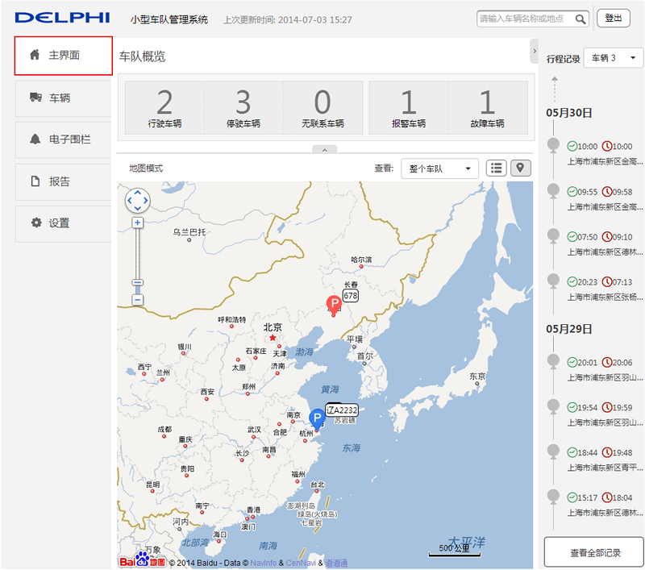
车队概览
车队概览提供对整个车队车辆当前状态的纵览功能。
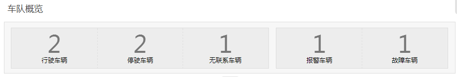
行驶车辆：整个车队中正在行驶的车辆总和。点击它，页面将跳转到车辆页面的行驶车辆列表。
停驶车辆：整个车队中所有停驶车辆总和。点击它，页面将跳转到车辆页面的停驶车辆列表。
无联系车辆：当前版本此功能暂未开放。
故障车辆：整个车队中所有故障车辆总和。点击它，页面将跳转到车辆页面的故障车辆列表。
报警车辆：整个车队中所有报警车辆总和。点击它，页面将跳转到车辆页面的报警车辆列表。
显示模式
显示模式有地图模式和列表模式两种。默认以地图模式显示。
地图模式
点击地图模式图标可以将显示模式从列表模式切换到地图模式。
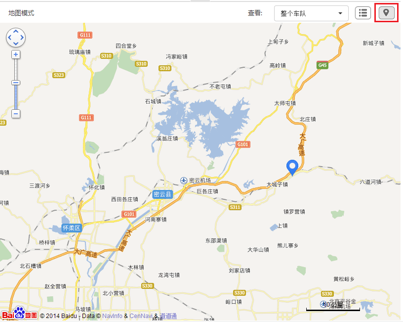
(1) 图标说明
不同样式的车辆图标代表车辆不同的状况。
：车辆处于行驶状态。
：车辆处于停驶状态。
：车辆处于无联系状态。此功能当前版本未开放。
：车辆处于行驶状态，但有故障或者报警。
：车辆处于停驶状态，但有故障或者报警。
(2) 实时信息
点击地图上的车辆图标，将弹出此车辆的实时信息的对话框。
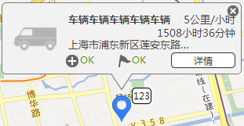
实时信息对话框中，会显示此车辆的司机姓名、当前地址、健康状况以及报警状况。若车辆在行驶中，还会显示车速等信息。
健康状况说明：
: 车辆无故障。
: 辆有故障。
报警情况说明：
: 无报警。
: 车辆有报警。
报警情况说明：
: 无报警。
: 车辆有报警。
车速情况说明：
正在行驶的车辆会显示当前车速以及发动机运行时间。而非行驶车辆则不会显示这些信息。
点击实时状况对话框中的 ，可以跳转到车辆页面中的车辆详情页面。
列表模式
点击列表模式图标可以将显示模式从地图模式切换到列表模式。
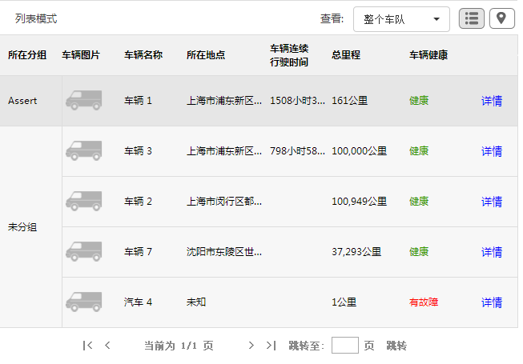
点击车辆信息后面的详情按钮，将会跳转到车辆页面的车辆详情页面。
查看
查看下拉框中显示当前车队下的所有分组名称，通过选择分组可以查看指定分组的车辆信息，默认状态下为整个车队。
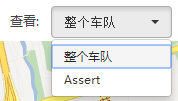
大图模式显示
点击页面中的向上箭头以及向右箭头，会使主界面的车队概览和行程记录部分收起，地图模式将显示更大的地理区域，列表模式则将在更大的区域内显示。
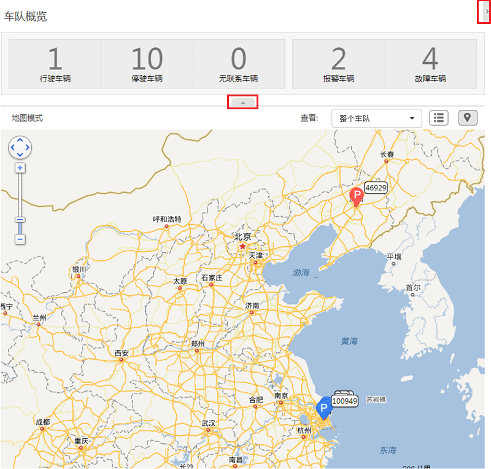
行程记录
主界面的右侧会显示指定车辆的行程记录。
若车辆处于行驶状态，行程记录最上方的箭头显示为虚线。否则显示为实线。
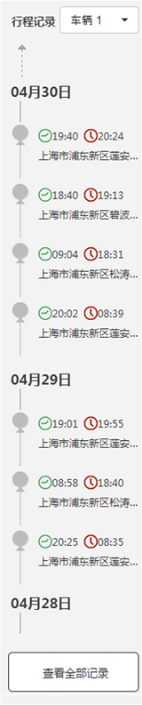
(1) 选择指定车辆，显示行程记录
行程记录下拉框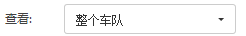内，显示车队下所有的车辆名字。
选择指定车辆，下面的行程记录会更新为此车辆的最近行程记录。
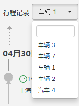
在行程记录下拉框中的输入框内，可以输入输入车辆名字，进行检索，指定车辆。
(2) 显示全部记录
行程记录默认情况下只显示最近记录，如果想要查看全部记录，请点击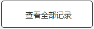，页面将会跳转到车辆页面中的车辆详情页面的行程记录部分。